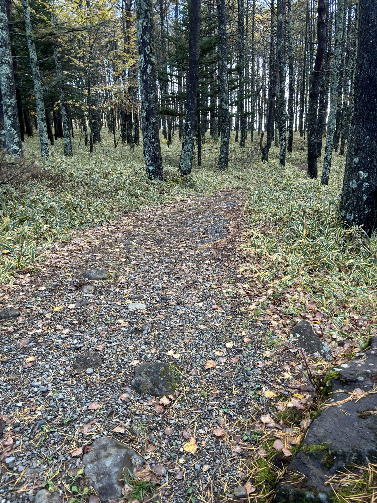
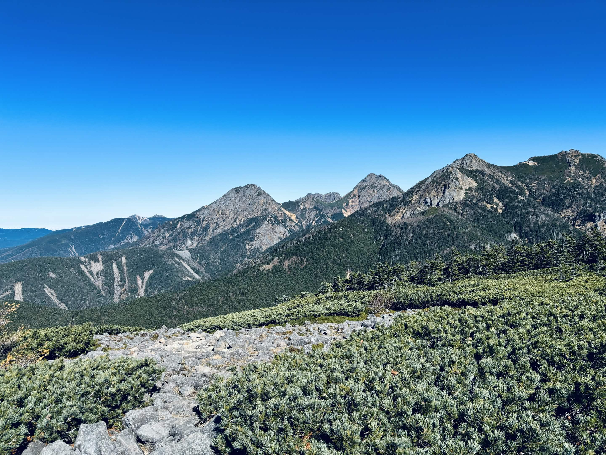
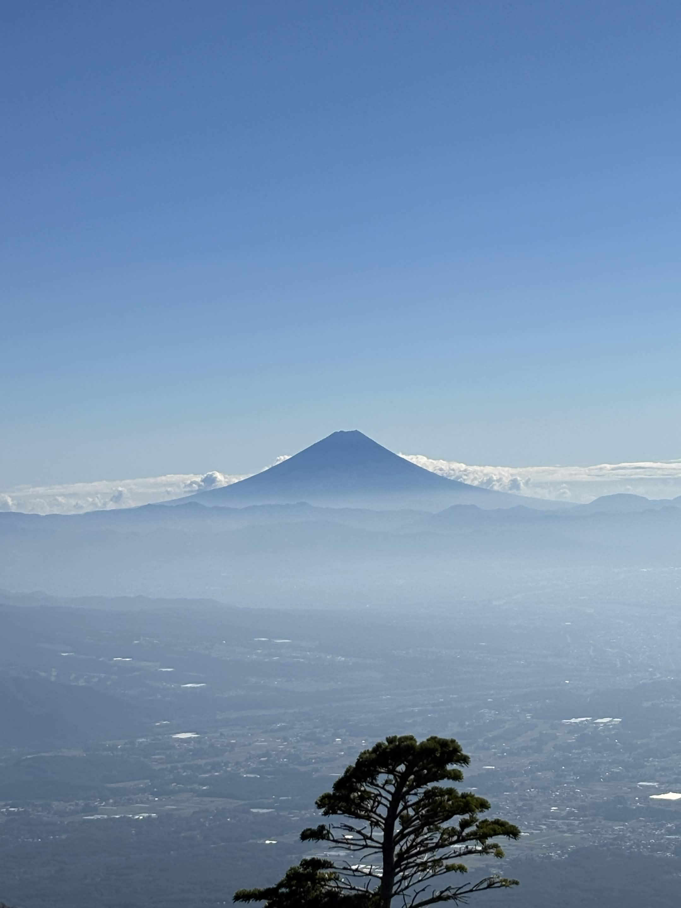

| 日程 | 2024年11月3日（登頂） |
|---|---|
| メンバー | ソロ（なし） |
| 難易度（俺流10段階） | 技術力 2 / 体力度 4 |
| アクセスコース目安 |
・観音平駐車場 → 編笠山：約2時間30分 ・編笠山 → 青年小屋：約30分 |

11月初旬の八ヶ岳・編笠山へ。この時期にしては珍しく雪もなく、極上のコンディションに恵まれました。

最高の条件と素晴らしい快晴に恵まれ、登山の魅力を改めて全身で実感できた一日となりました。この景色を胸に刻み、これからもさらにいろいろな山にチャレンジしていきます！
← HOMEへ戻る